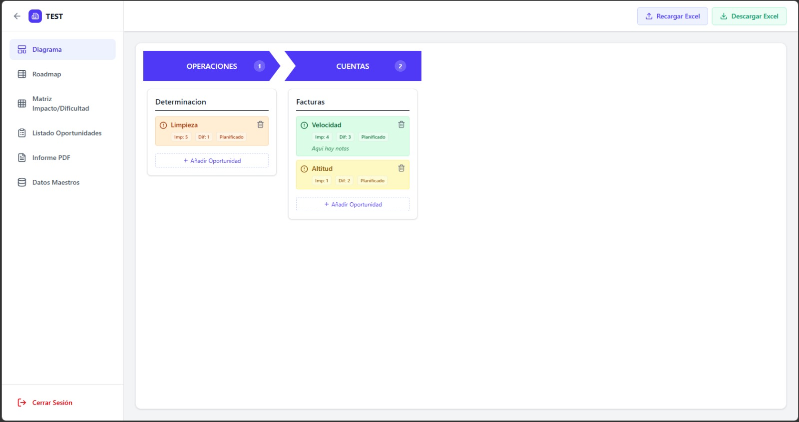

Digital Roadmap
Ecosistema digital para la planificación estratégica y el seguimiento de la transformación industrial.
Explorar la Interfaz
Funcionalidades Clave

Diagnóstico
Diagrama de situación actual
Representa visualmente el estado actual de los procesos y sistemas de la organización. Identifica flujos de información, puntos de mejora y áreas críticas para orientar la estrategia de digitalización.
- Mapeo de procesos y sistemas existentes
- Identificación de ineficiencias y cuellos de botella
- Base estructurada para definir el punto de partida

Oportunidades
Listado de oportunidades de mejora
Centraliza todas las oportunidades de digitalización detectadas en un registro estructurado. Clasifica cada iniciativa por área, impacto esperado y nivel de esfuerzo para facilitar la toma de decisiones.
- Registro unificado de oportunidades por área
- Clasificación por tipo de iniciativa y tecnología
- Estimación de impacto y recursos necesarios

Priorización
Matriz impacto / dificultad
Visualiza de un vistazo qué iniciativas aportan mayor valor con menor esfuerzo. La matriz permite priorizar objetivamente el orden de ejecución y detectar los quick wins más relevantes para la organización.
- Posicionamiento de iniciativas por impacto y dificultad
- Identificación rápida de quick wins y proyectos estratégicos
- Criterio objetivo para la priorización del roadmap